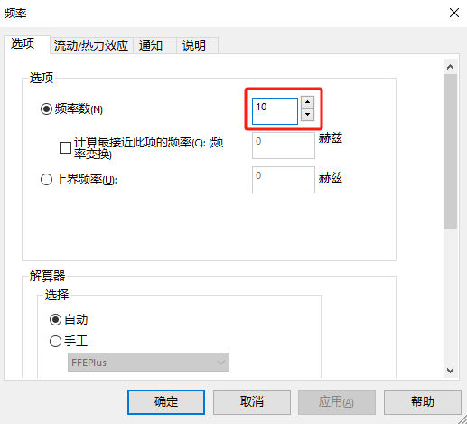
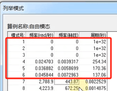
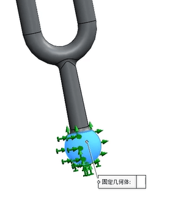
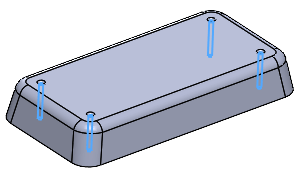

Simulation-频率分析
共振现象
什么是振动(频率)?
- 钟摆和秋千的摆动
- 弦乐器振动而发出声音
- 洗衣机在脱水时也会突突突的振动现象。
- 地震则是大地的振动。
是指一个物理系统在其自然的振动频率和自然波长下趋于从周围环境吸收更多能量的趋势。共振在物理学上运用的频率非常高，共振现象是宇宙最普遍、最频繁的自然现象之一。在生产生活中，共振是我们的好帮手，但是共振并不是都对我们有利，对我们也有害。
频率分析可通过计算共振频率而帮助您避免共振。它还提供了有关解决动态响应问题的信息。
共振的发生：符合固有频率，且共振频率方向的激励
每种结构都具有固定的振动形态，称之为振动模态（共振频率）。现实中几乎每种结构体都有无数的固有频率及相应的振动模式
而固有频率是在不考虑任何约束的情况下，结构零件本身的固有特性，也称为自然频率( natural frequency)，振动的频率与初始条件无关，而仅与结构零件的固有特性有关（如质量、形状、材质等等），
模态一般包含频率，振型和阻尼三个因素。
graph LR 模态影响因素-->频率 模态影响因素-->振型 模态影响因素-->阻尼
固有频率
当静止状态的实体受到干扰时，通常会以一定的频率振动，这一频率也称作固有频率或共振频率。固有频率不只一种
对于每个固有频率，实体都呈一定的形状，也称作模式形状。频率分析就是计算固有频率和相关的模式形状。
理论上，实体具有无限个模式。对于有限元分析，理论上，有多少个自由度 (DOF)，就有多少个模式。在大多数情况下，只考虑其中的一些模式。
当实体承担的是动态载荷，且载荷以其中一个固有频率振动时，所发生的过度反应即是共振。例如，如果一辆汽车的一个轮胎失去平衡，则在一定速度下，由于共振现象，这辆汽车会发生剧烈摇摆。而以其它速度行驶时，这种摇摆现象就会减轻或消失。另一个范例是高音可能会导致玻璃震碎。
分析目的
大多数的情况下，产品设计都需要规避共振。在已知产品将面临什么样的激励频率好，我们总是以保证产品的固有频率不与激励频率相吻合来设计产品，有利于保证产品稳定性。
模态分析有很多功能
（1）通过模态分析，可以知道结构的动力特性，比如周期频率，振型，这些对于了解结构在外动力荷载作用下的响应有很重要的作用，比如人走动的频率是2.5hz，那么你算出来桥的频率也是这个数，那么你就知道要小心共振了。
（2）模态分析帮助工程师进行接下来的动力计算，如地震响应的计算，楼板振动的计算，爆炸带来的影响，风振（赛格大厦），这些分析帮助工程师设计出更好的结构来抗这些未知的荷载。
（3）了解结构的薄弱环节，如果你的结构很复杂，由多种材料多种体系组成，通过模态分析，你会得到一些局部振动，这些局部振动就会让你发现结构在哪里是最弱的，需要进行加强。
（4）局部振动除了是结构本身出现薄弱环节以外，也有可能是工程师建模出错，所以模态分析也能帮助工程师发现建模出错，同时，对于有经验的工程师，什么结构什么物体都有一定的频率值，做完模型一做模态分析就能马上看出问题，比如刚度输入错误，质量密度不对等等
分析方法
使用SOLIDWORKS Simulation分析结构零件固有频率通常的方法如下：
graph LR 模型频率分析-->指定材质-->设定频率数,推荐10阶分析-->划分高品质网格-->运行结果
固有频率分析
问题描述:分析音叉以下三种工况
1、考察自由状态下的音叉模态
2、考察音叉是否能够释放出频率440Hz的音调
3、在音叉末端加载450N的压力载荷，和工况二做对比，考察两种情况下频率的改变情况并对结果进行解释。
材料:Chrome Stainless Steel
自由状态模态
直接运行结果：
振幅个数。由【算例属性-振动数】确定
使您能够设置要计算的固有（共振）频率的所需数量。 默认情况下，计算最低的五个频率。 刚性实体模式由 FFEPlus 解算器来计算。 无任何约束的实体有六个刚性实体模式。 刚性实体模式有零个频率（无限周期）。
如果模型的工作情形包含动态载荷，则至少计算一个高于载荷频率的频率，这一点很重要。在大多数情况下，共振并非所需的，因为它会导致失效。不过，某些设备利用共振来触发事件，同时提供控制过度相关变形的措施。
最初的6个振动模式自由度为0，对应着刚体模态。因为音又没有支撑，频率为0（刚体模态），它存在6个自由度:三个转动，三个平动，查看此刻的质量参与。
约束状态模态
添加夹具
运行结果：
对比自由模态下的共振频率列表
瞬态分析
问题描述:分析音叉顶部施加Y方向的载荷敲击一次敲击时间为0.01S考察0.1S内结构的变形和应力，并对计算精度问题进行研究。
材料:Chrome Stainless Steel
模态时间历史:利用模态叠加法求解短瞬的振动问题
其他示例
根据不同的加强筋分布有3个配置，找出固有频率最高的配置，此配置的第一固有烦率是多少?（在赫兹小数点后两位数字）
材料: PET
夹具: 固定4个铰接面如图A所示
网格大小: 默认。
